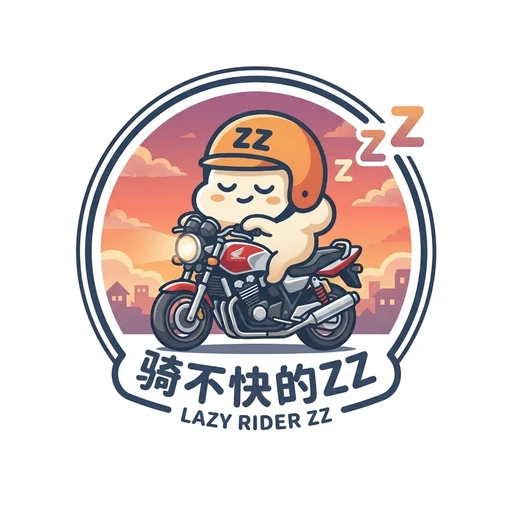

LAZY RIDER ZZ · DATA TOOL
点位录入助手
把实拍、截图、网友反馈整理成统一JSON。没有核实的点位不要写成已核实电子眼。
录入规则
- 电子眼点位必须保留来源，未核实一律用“待核实”。
- 坐标用高德GCJ-02，不要混用百度BD-09。
- 每个点位最好保留截图/照片，但不要把隐私车牌放入公开仓库。
- 页面表达用“通行提醒/风险提醒”，不要写“躲抓拍”。

把实拍、截图、网友反馈整理成统一JSON。没有核实的点位不要写成已核实电子眼。